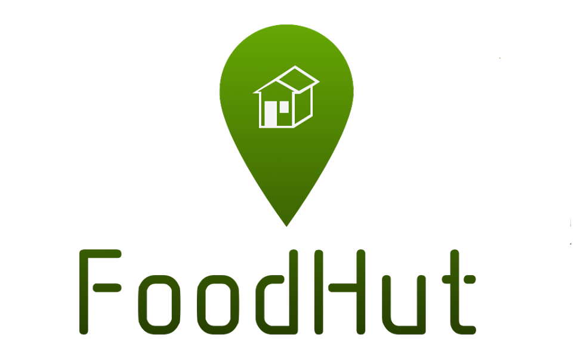
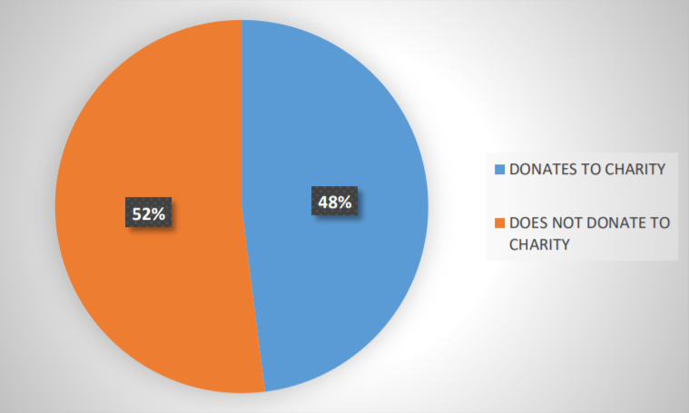

Making food waste a resource
Making food waste a resource
“If food waste were a country, it would be the third largest emitter of greenhouse gases. That is because a lot of productive land and soil go to waste. Food waste is therefore a major contributor to climate change. Climate change, in turn, undermines food production and food security.”
These are the words of the Norwegian minister of Climate and Environment Vidar Helgesen, at the EAT Stockholm Food Forum 12. juni 2017.
Food waste is a serious matter which has a major impact on our environment. Our project is focused on finding a solution that will help us reduce this problem.
Let us first look at how much food is thrown away and the consequences that follow. In the period from 2010 to 2015, two scientists from Østfoldforskning, Aina Stensgård and Ole Jørgen Hanssen, did some research on the subject of food-waste. We will use some of that research to our benefit.

As we can see from these numbers, Norwegians throw away an enormous amount of food each year, approximately 355 128 tons/year in total. That amount is responsible for the emission of 978 000 tons of CO2, and as a result generates a cost of 20,5 billion NOK per annum.
A huge part of food waste is generated by grocery stores and supermarkets. According to the non profitable organisation Framtiden i våre hender, Norway has almost 4000 supermarkets. This number puts our country among the European leaders for the number of supermarkets per capita. Most of the food at these supermarkets gets sold, but not everything. Some of the remaining food surplus finds its way to charity, but most of it is not effectively redistributed.
As we can see in the diagram above, only 48 % of supermarkets reported donating parts of their food surplus to charity in 2015, however that tendency is decreasing. The rest is getting wasted, and according to Hanssen & Stensgård, generating “annual emissions of up to 150 000 tons of CO2 and financial losses of more than 3 billion NOK a year”.
We decided to find a solution that could help with redistribution of unwanted food surplus to avoid it going to waste. Our idea, called “FoodHut”, supports an alternative way of surplus redistribution. Read more about it here.